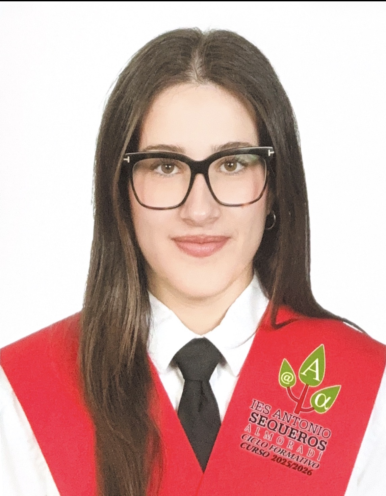
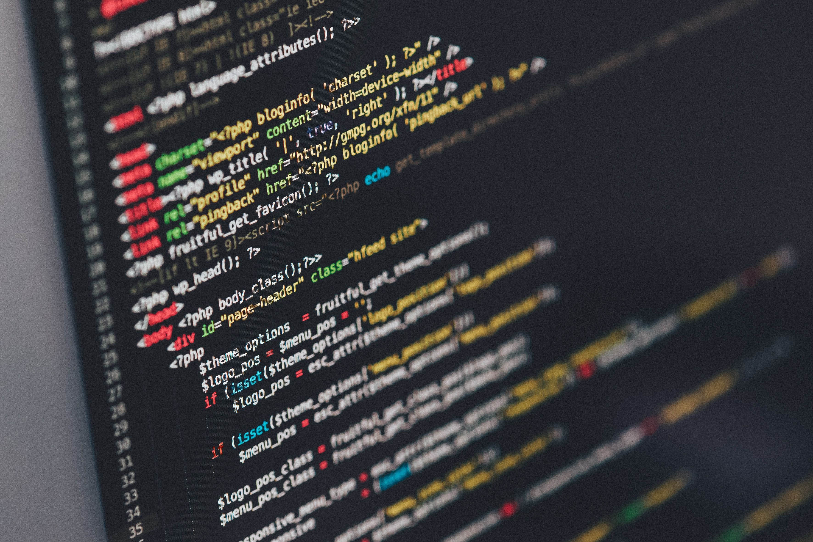

Sobre mí
Hola, soy Aitana García, tengo 24 años y soy de Alicante.
En 2022 empecé el grado superior de ASIR, que terminé en 2024. Ese mismo año en septiembre empecé DAM y lo he terminado en junio de 2026. A nivel de experiencia profesional, hice tres meses de prácticas en una empresa relacionadas con ASIR y luego sumé otros tres meses trabajados. Recientemente, completé mis tres meses de prácticas de DAM desarrollando una aplicación full stack.
Llevo desde mayo buscando trabajo para seguir ganando experiencia. Como el mercado laboral está pidiendo muchos requisitos, he decidido no quedarme quieta y empezar a desarrollar proyectos por mi cuenta para abrirme paso y demostrar lo que sé hacer.

Mi Proyecto Actual: Helpdesk Inteligente
Estoy desarrollando desde cero una plataforma de gestión de tickets enfocada a departamentos de soporte IT y empresas tecnológicas. Es un proyecto donde voy a unificar todo mi perfil: bases de datos, desarrollo backend y despliegue de sistemas, preparándolo todo para integrarle funciones de Inteligencia Artificial más adelante.
Ver el progreso del proyecto →